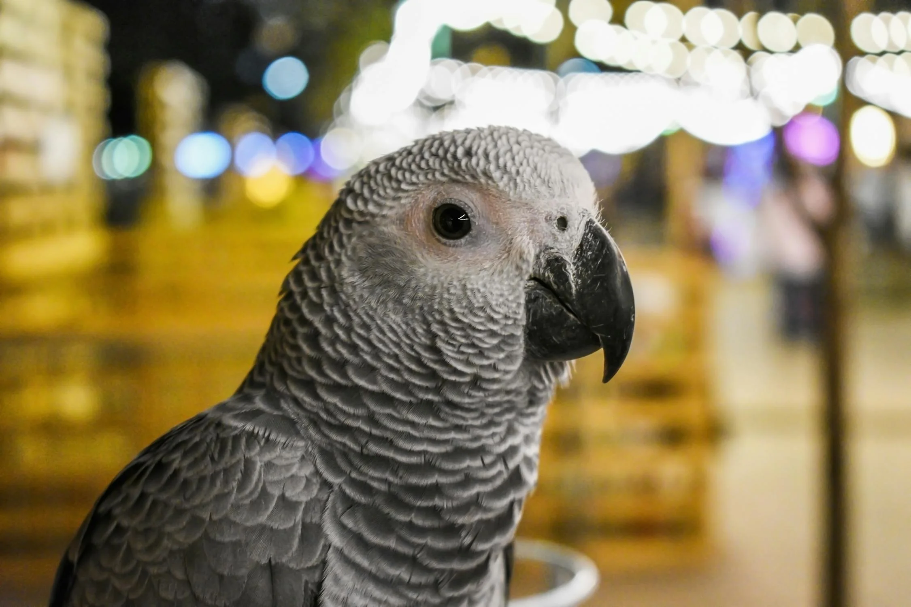

Grey parrots, known for their exceptional intelligence and remarkable ability to mimic human speech, have become one of the most popular pet birds worldwide. These stunning creatures, particularly the African Grey, require dedicated care and attention to thrive in a domestic environment. Providing proper nutrition, mental stimulation, and a comfortable habitat is essential to their well-being. This guide offers comprehensive insights into caring for grey parrots, helping ensure they live a healthy and happy life, all while building a strong bond with their owners.
